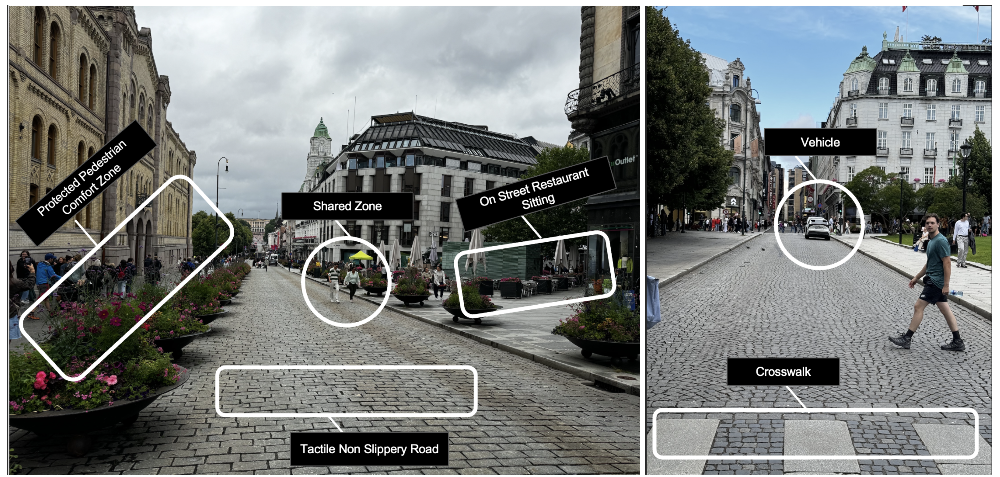

Colored Shared Spaces (CSS): How Visual Design Transforms Pedestrian Experiences
28th International Conference on Human-Computer Interaction (HCII 2026) · Montréal, Canada
How visual design choices in shared spaces transform pedestrian experience in pedestrian–AV interaction. Complements SPIU work by studying the surrounding environment, not just the signaling unit.
Forthcoming · July 2026